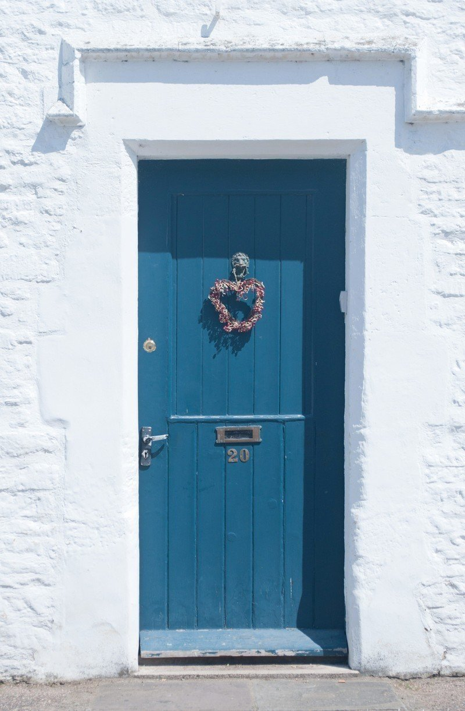

ただいま。
おかえり。
ほのかにコーヒーの匂いがした。
君の家なのに、何度お邪魔しても、変わりない笑顔で迎えてくれる。
「長い間、どうしていたの？」
純粋な瞳が僕に問いかける。
「社会の中で生きていたんだ」
昔を思い出しながら、君の家に上がった後、シンプルな椅子に腰をかけ、君の淹れてくれたコーヒーに口をつけた。
懐かしい味がふわっと心に溶け込んだ。
「そう。どうだった？」
「楽しいと思える部分も、もちろんあるよ。でも……」
「でも？」
料理をする君の姿に見惚れて、僕は必死に次の言葉を探す。
「落ち着かないんだ。みんな、いつもピリピリしてるというか」
久しぶりの空間に目を移した。
前と何も変わりはしなかった。素朴な絵画、淡色の本棚、古めかしいレコードプレーヤー。
いつの間にか、家の中には出会った頃の音たちが楽しそうに踊っている。
「社会なんて、そんなものよ」
君は微笑んだ。
そして、好物の、まっさらな皿に盛られた冷製パスタを目の前に差し出した。
「あなたはあなたを生きればいいじゃない」
「ありがとう」
そう言って、フォークを持つ手が止まる。
「そうそう。まだまだ話したいことがあるんだ」
「夜は長いわ。最後まで聞くよ」
こんな日が続くように、僕はいつかまた、戻らなきゃならない。
でも、またここに来るさ。その笑顔のためなら、何でもする。
君は君。僕は僕を生きるために。